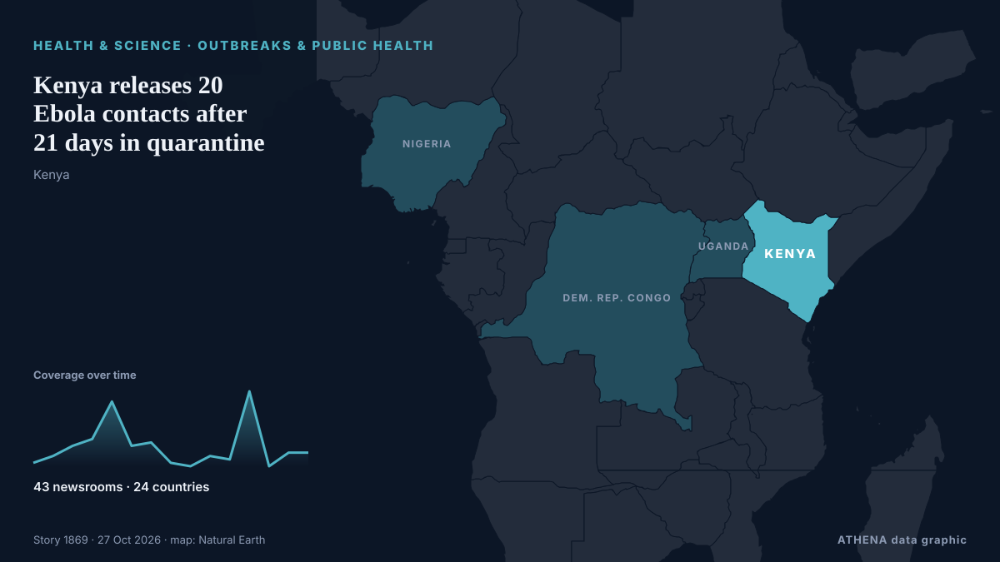

Kenya releases 20 Ebola contacts after 21 days in quarantine

Kenya has declared Bundibugyo Ebola a formidable epidemic disease, introducing new rules on screening, isolation, quarantine, contact tracing and safe burials to strengthen outbreak control measures. from The Standard
Reported independently by 43 outlets in 24 countries since 12 Oct, first by The Standard; coverage is quiet now. ATHENA rates the risk high (6.4/10), driven mainly by the severity of the harm described and its geographic and sector reach. Confidence is 92% (high), with 43 independent outlets corroborating it and an average source reliability of 75%. Who reported it: 7 newsrooms in Kenya, 6 newsrooms in United States, 3 newsrooms in China. The coverage ran from 12 Oct to 17 Oct, over 123 hours.
Why it matters: Health and science developments can change public-health risks, research priorities and regulation.
What changed: 6 new reports from 6 newsrooms in the 24 hours to 27 Oct.
First reported as: Kenya confirms second Ebola case, a relative of first patient
At a glance
Selected, scored and written by ATHENA's published methodology. No editor intervenes in individual events. How this is produced ›
| 12 Oct 17:52 UTC | 1 |
|---|---|
| 13 Oct 17:52 UTC | 3 |
| 14 Oct 17:52 UTC | 6 |
| 15 Oct 17:52 UTC | 8 |
| 16 Oct 17:52 UTC | 19 |
| 17 Oct 17:52 UTC | 6 |
| 18 Oct 17:52 UTC | 7 |
| 19 Oct 17:52 UTC | 1 |
| 20 Oct 17:52 UTC | 0 |
| 21 Oct 17:52 UTC | 3 |
| 22 Oct 17:52 UTC | 2 |
| 23 Oct 17:52 UTC | 22 |
| 24 Oct 17:52 UTC | 0 |
| 25 Oct 17:52 UTC | 4 |
| 26 Oct 17:52 UTC | 4 |
| 17 Oct 11:30 UTC | 5.7 |
|---|---|
| 17 Oct 13:55 UTC | 6.2 |
| 17 Oct 21:07 UTC | 7.7 |
| 19 Oct 15:50 UTC | 6.7 |
| 22 Oct 07:04 UTC | 6.6 |
| 24 Oct 02:41 UTC | 6.9 |
| 26 Oct 13:47 UTC | 6.7 |
| 27 Oct 14:46 UTC | 6.4 |
Why these numbers
Importance
Risk
Confidence
The reporting — who reported it, and when
headline as published · opens the original- The Standard · KenyaKenya declares Ebola a formidable epidemic disease, sets new rules
- Africanews (English) · AFRKenyans in border town 'afraid' of Ebola risk after first death
- Lowy Institute — The Interpreter · AustraliaEbola doesn’t stop at a border
- ABC News (International) · United StatesKenya confirms second Ebola case, a relative of first patient
- CBC News · CanadaKenya confirms 2nd case of Ebola in relative of patient who died earlier this month
- Africanews (English) · AFRKenya reports second Ebola case, family member of first patient
- STAT News · United StatesKenya reports second Ebola case
- UN News · United StatesWHO urges vigilance after Kenya confirms second Ebola case
- China Daily — page reader · ChinaKenya gazettes new Ebola screening and quarantine rules
- The New York Times (World) · United StatesSecond Ebola Infection Announced in Kenya
- AllAfrica · AFRKenya: WHO Urges Vigilance After Kenya Confirms Second Ebola Case
- DW English · GermanyHow prepared is Kenya for an Ebola outbreak?
- Africanews (English) · AFRKenya on high alert as Ebola outbreak in DR Congo fuels border fears
- The Standard · KenyaKenya confirms third Ebola case
- Capital FM · KenyaKenya Confirms Third Ebola Case as 65-Year-Old Woman Tests Positive
- KBC · KenyaHealth ministry confirms third Ebola case in Kenya
- Xinhua (English) — page reader · ChinaKenya confirms third Ebola case
- Channels TV · NigeriaKenya Records Third Ebola Case, Health Ministry Says
- ABC News (International) · United StatesKenya confirms third Ebola case, a relative of the first patient who died
- Africanews (English) · AFRKenya confirms third Ebola case as health officials race to contain outbreak
- Al Jazeera English · QatarKenya records third Ebola case, linked to first patient who died
- Cyprus Mail · CyprusKenya reports third Ebola case, a close relative of first two patients
- IOL · South AfricaKenya records third Ebola case in the country: health ministry
- France 24 English · FranceKenya reports third Ebola case, contact tracing continues
- The Independent · United KingdomEbola outbreak spreading to Kenya exposes failures that put battle to contain virus at risk, experts warn
- The Standard · KenyaKenya confirms four new Ebola cases, total now at seven
- Capital FM · KenyaEbola cases rise to 7 as 4 new cases detected in quarantine
- Channels TV · NigeriaFour More Ebola Cases Detected In Kenya
- Jamaica Observer · JamaicaFour more Ebola cases detected in Kenya, bringing total to seven
- Cyprus Mail · CyprusKenya confirms four new Ebola cases, bringing total number to seven
- Xinhua (English) — page reader · ChinaKenya confirms 4 new Ebola cases, total rises to 7
- KBC · KenyaKenya confirms 4 new Ebola cases
- Anadolu Agency (English) · TurkeyKenya confirms 4 new Ebola cases, including 3 health workers, raising total to 7
- Al Jazeera English · QatarKenya confirms four more Ebola cases, bringing total to seven
- Arab Times · KuwaitKenya’s Ebola Cases Rise to 7 as Three Health Workers Test Positive
- Stuff · New ZealandKenya’s Ebola cases rise to 7, including health workers who cared for the first patient
- APA (English) · AzerbaijanKenya’s Ebola cases rise to 7, including health workers who cared for the first patient
- SABC News · South AfricaKenya confirms four new Ebola cases, bringing total number to seven
- The New York Times (World) · United StatesKenya Confirms Four New Ebola Cases
- TASS (English) · RussiaNumber of Ebola cases in Kenya rises to seven — agency